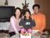
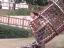
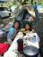

2006年12月23日 18時52分撮影
森本さんちでクリスマス会がありました。。。★☆★。。。
３人の写真は久しぶりです。みなさん、、、「メリー・クリスマス☆」2006年12月10日 13時41分撮影
今日はバレエの発表会。。。この衣装は「パリの喜び」の貸衣装なのだ。
お化粧すごいでしょ・・・！２年後の発表会はつけまつ毛にチャレンジよ！2006年11月11日 14時44分撮影
来月発表会があるバレエのリハーサル風景。親バカですが、、、
随分上手になってきました。特に表情が豊かになたよー！2006年11月3日 10時37分撮影
桜井っ子フェスティバルのオープン参観の様子。
「ピッタンネコ」は、なかなかユニークでしたね。2006年10月29日 11時38分撮影
桜井っ子フェスティバルのオープニング。
じいちゃん＆ばぁちゃんが勢ぞろい。
2006年10月20日 13時50分撮影
創立記念日は、家族3人で「竹取公園」で思いっきり遊びました。2006年10月10日 18時45分撮影
８歳のお誕生日。これはココスでお祝いをしてもらった風景です。
2006年10月8日 13時47分撮影
キャンプ初日。日中は暑いくらいの日差しなのに、夜は寒かった。2006年10月3日 16時52分撮影
この日初めてトライした「一輪車」。今では、随分上手になったね。2006年10月3日 13時01分撮影
大ハッスルの運動会。平日に延期になったので、
パパに見てもらえないのが残念だったね。